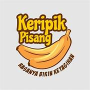

H2: Produk Unggulan Kami
Kami menyediakan berbagai macam kripik pisang dan kue yang dibuat segar setiap hari.

H3: Kripik Pisang
Terbuat dari pisang utuh pilihan,
sangat sehat untuk sarapan.
Salah satu pelanggan berkata: Kripik pisang ini adalah yang terbaik yang pernah saya coba.
Harga Spesial: Rp 20.000 Rp 15.000
H2: Kenapa Memilih Kami?
Bahan Premium: Kami hanya menggunakan bahan-bahan terbaik.- Higiene Terjamin: Proses pembuatan yang bersih.
- Rasa Konsisten ™
H2: Pesan Sekarang
| No | Nama Produk | Harga |
|---|---|---|
| 1 | Kripik Pisang Basic | Rp 15.000 |
| 2 | Kripik Pisang Premium | Rp 30.000 |
Silakan isi formulir di bawah untuk memesan:
Formulir PesananH3: Apa Kata Pelanggan?
"Kripik pisang ini sangat gurih tidak terlalu manis. Semua orang di pesta menyukainya."
H2: Lokasi Kami
Temukan kami di sini:
H2: Hubungi Kami
Kripik Pisang FlojaJl. Cinderalas No. 12
Yogyakarta, Indonesia
Email: emanndiwa34@gmail.com
Tanya kami tentang KPJ :)